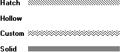

The pattern attribute specifies the pattern of a geometric pen.
The following illustration shows lines drawn with different geometric pens. Each pen was created using a different pattern attribute.

The first line in the previous illustration is drawn using one of the six available hatch patterns; for more information about hatch patterns, see Pen Hatch. The next line is drawn using the hollow pattern, identical to the null pattern. The third line is drawn using a custom pattern created from an 8-by-8-pixel bitmap. (For more information about bitmaps and their creation, see Bitmaps.) The last line is drawn using a solid pattern. Creating a brush and passing its handle to the ExtCreatePen function creates a pattern.
Â
Â